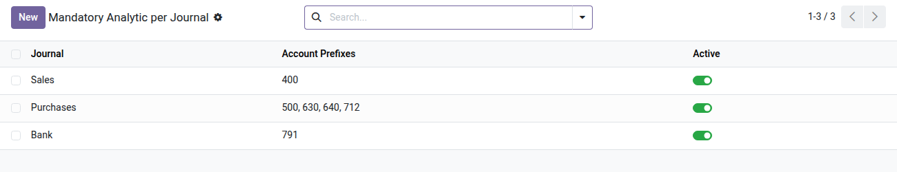
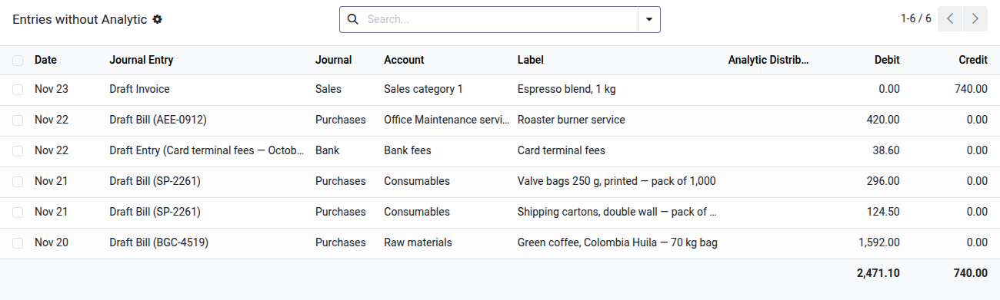

The criterion Odoo lacks — the journal — and the check before posting.
Odoo can already make analytic mandatory: analytic plan applicability requires it by business domain, by account prefix and by product category. Two things are missing. The journal, which is how most accounting firms actually think — everything going through purchases is distributed, the rest is not. And the timing: the core check only speaks up at posting, when data entry is finished and the screen shows an error instead of a result.
Purchases on four expense families, sales on the income account, bank on bank fees only. Each rule reads at a glance, and can be switched off without being deleted.

The draft lines the rules require, with their account, label and amount, totaled. The fix happens here, calmly, rather than at posting time.

Requiring a distribution is one thing; controlling who enters what in which journal is another. The OdooSkills range covers journal and analytic plan partitioning, approval of entries and vendor bills, and cash dashboards. Full catalog: apps.odooskills.com.
License LGPL-3 — compatible with Odoo 19.0 Community and Enterprise. Support: apps@odooskills.com.